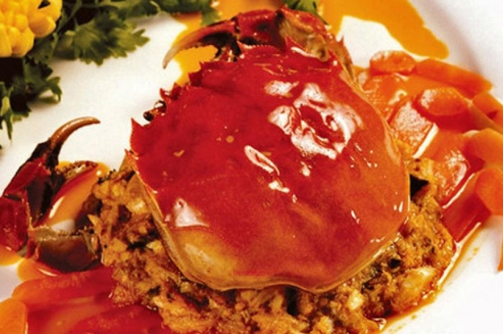
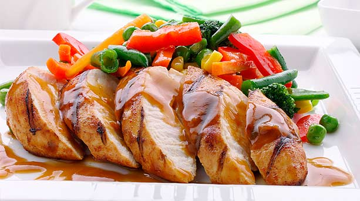
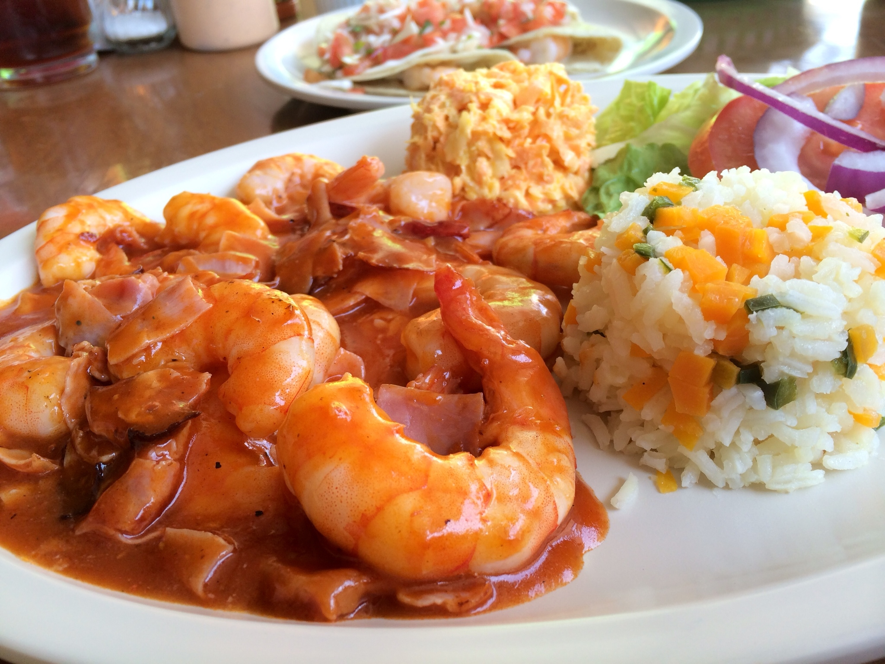
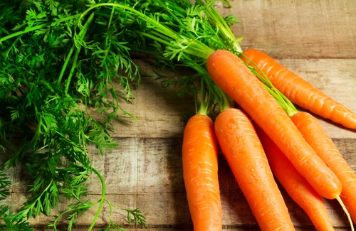
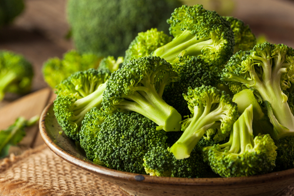
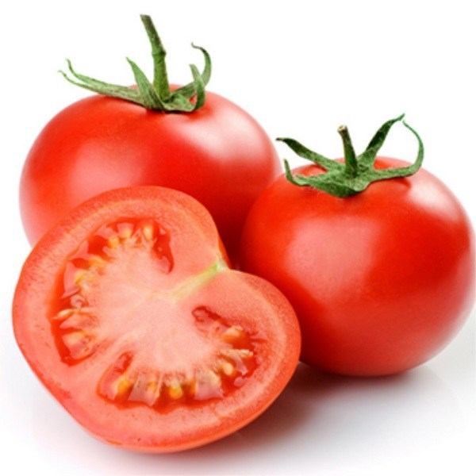
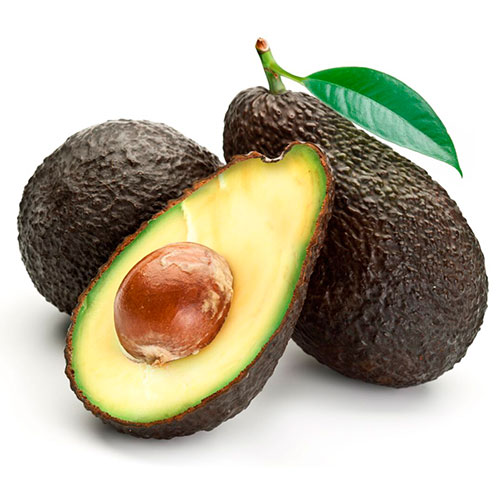
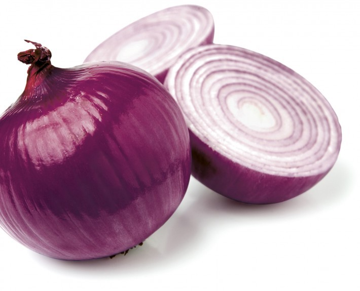

Compras para la semana
Está semana se planea comer platillos con carnes blancas: pescado y pollo. Las porciones de carne son proporcionales a lo que cabe en su puño. Acompañelo con verduras y pasta.
Carne
- Atún

- Cangrejo

- Pollo

- Camarón

Verduras
Mercado de San Juan
- 1Kg Zanahorias

- 1kg Brocoli

- 2kg Tomate

- 1/2 Aguacate

- 1 kg Cebolla morada

Carbohidratos
Supermercado
Liquidos